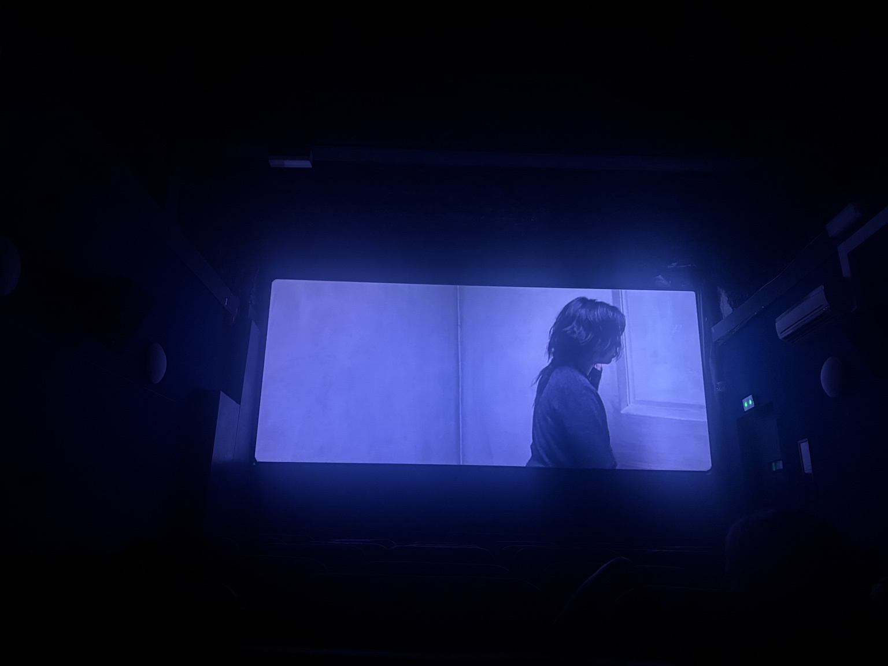
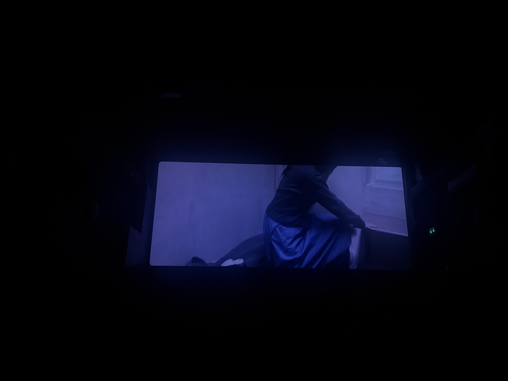
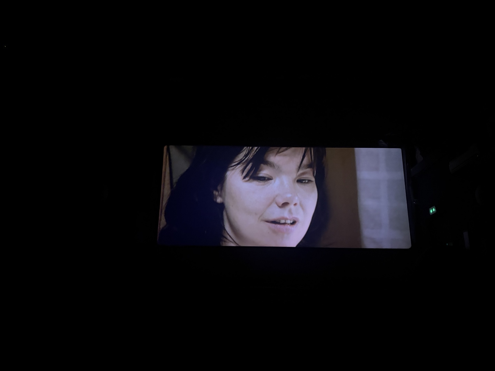
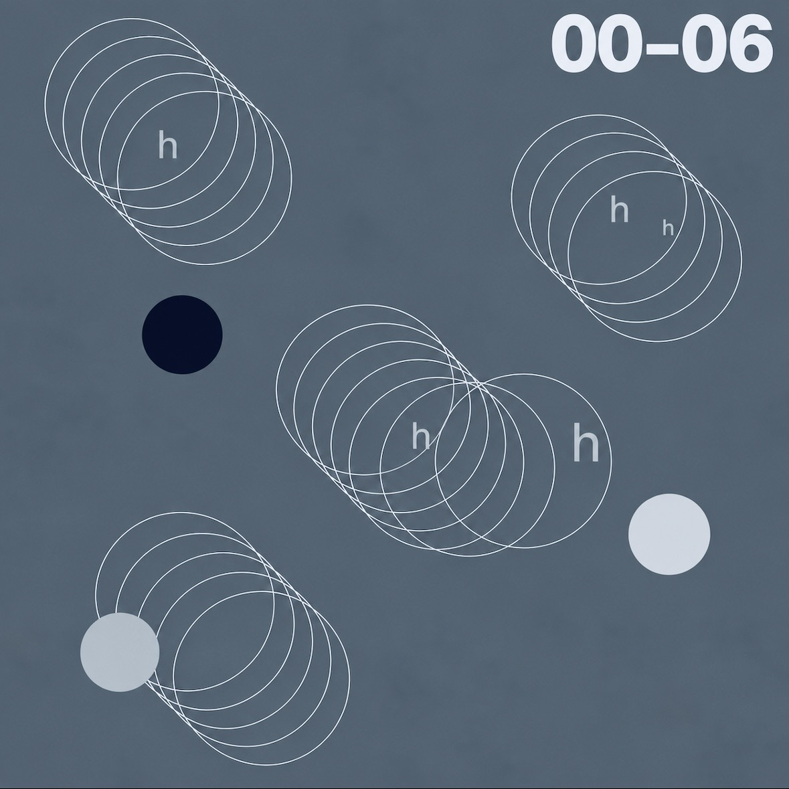

Archive
Celine 2000-2006
2026
The title, for the record, has nothing to do with the fashion house.
There is a small cinema in Paris’s 5th arrondissement where Issa Bukasa went to see Lars von Trier’s Dancer in the Dark. At some point during the film, he took three photographs of the screen. Somehow.
They are mostly photographs of darkness. A little blue light. Björk’s face suspended inside it.

Maybe that is where this record began.
Selma Ježková, the film’s central character, is slowly losing her sight. She works at a factory, raises her son alone and quietly saves what she can for an operation that might spare him the same fate. The circumstances surrounding her become increasingly cruel. Still, Selma hears music everywhere. Machines keep time. Factory floors become stages. When ordinary life becomes difficult to bear, she listens for another rhythm inside it.

Bukasa understood that.
Celine 2000-2006 collects seven songs from a period when his own relationship with music had become uncertain. They come from daily diaries, passing emotions and the recurring thought that perhaps making something did not always require sharing it. Sometimes he wanted to stop altogether.
The film complicated that thought.
On “Sage,” saving becomes its own kind of tenderness. Selma has her small reserve of money, guarded because it belongs to a future she can still imagine. Bukasa has music. The song circles a similar instinct: keeping something warm when the rest of life has gone cold. Not happiness, exactly. More like an ember.
Then things begin to turn.
“Grizz Lee” carries the unease of discovering danger in something once mistaken for safety. Selma learns this through betrayal. Bukasa puts it another way: tread slow, you’re in the wild now. The grizzlies, he says, were thought to be teddies.
Across the record, that tension keeps returning. “Alms” arrives and disappears in barely more than a minute. “Brother -chorus (c-em)” lingers much longer, almost suspended. “zxy” moves differently again. The songs do not resolve one another so much as remember different temperatures of the same life.
Which makes “Lifting me 2” feel less like an ending than an answer.

Near the end of Dancer in the Dark, Selma has almost nothing left. Even standing becomes difficult. Brenda reminds her of something seemingly useless under the circumstances: dancing. Music. Joy. And somehow Selma moves again.
It stayed with Bukasa after leaving the theater.
Not because Selma’s story suggests that music makes suffering disappear. It doesn’t. Perhaps the stranger possibility is that something beautiful can accompany a life without correcting it. A song can exist beside disappointment. Rhythm beside fear. Warmth beside cold.
And sometimes that is enough movement for another step.
Celine 2000-2006 came from Bukasa wondering whether he still wanted to make music at all. Seven songs later, there is no grand conclusion.
Only that he kept going.
Two videos will be released alongside the project.

- Celine 2000-2006
- Sage
- Alms
- Brother -chorus (c-em)
- zxy
- Grizz Lee
- Lifting me 2
X
2025
The World Is A Miracle
2024
Rory Express
2024
Sweetheart
2024